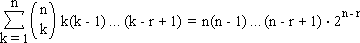
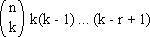
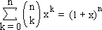
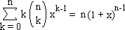
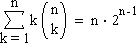

Solution to puzzle 69: Combinatorial sum
The result will be obtained in two steps.
- Show that, for any positive integer, r
 - Express k5 in terms of k, k(k - 1), k(k - 1)(k - 2), k(k - 1)(k - 2)(k - 3), and k(k - 1)(k - 2)(k - 3)(k - 4).
Step 1
This result may be proved by means of a direct counting, or combinatorial, argument.
The number of ways of choosing, from n people, a committee of k > 0 members; and, from the committee, a set of r > 0 distinct officials (chairperson, vice-chairperson, secretary...) is

Summing over all values of k, that is, from 1 to n, we have the left hand side of equation 1, above. This is the total number of ways of choosing a committee, with r distinct officials.
Counting the same objects in a different way, we can choose the chairperson, vice-chairperson, secretary... in n(n - 1) ... (n - r + 1) ways, and the remaining members of the committee in 2n-r ways.
Hence the number of ways of choosing a committee, with r distinct officials, is n(n - 1) ... (n - r + 1) · 2n-r, which is the right hand side of equation 1.
The result follows.
Step 2
In order to make use of the above result, we must express k5 in terms of k, k(k - 1), k(k - 1)(k - 2), k(k - 1)(k - 2)(k - 3), and k(k - 1)(k - 2)(k - 3)(k - 4).
We can do this by using Newton's forward difference formula. (See also Finite difference.)
Firstly, we draw up the difference table for k5, beginning at k = 0.
| 0 | 1 | 32 | 243 | 1024 | 3125 | 7776 | ||||||
| 1 | 31 | 211 | 781 | 2101 | 4651 | |||||||
| 30 | 180 | 570 | 1320 | 2550 | ||||||||
| 150 | 390 | 750 | 1230 | |||||||||
| 240 | 360 | 480 | ||||||||||
| 120 | 120 | |||||||||||
| 0 |
Reading off the first number in each row, and, for the rth difference row, dividing by r!, we have
k5 = k + 15k(k - 1) + 25k(k - 1)(k - 2) + 10k(k - 1)(k - 2)(k - 3) + k(k - 1)(k - 2)(k - 3)(k - 4).
Putting the steps together
| = n · 2n-1 + 15n(n - 1) · 2n-2 + 25n(n - 1)(n - 2) · 2n-3 + 10n(n - 1)(n - 2)(n - 3) · 2n-4 + n(n - 1)(n - 2)(n - 3)(n - 4) · 2n-5 | |
| = 2n-5 [16n + 120n(n - 1) + 100n(n - 1)(n - 2) + 20n(n - 1)(n - 2)(n - 3) + n(n - 1)(n - 2)(n - 3)(n - 4)] | |
| = n2(n3 + 10n2 + 15n - 10) · 2n-5 |
Remarks
Equation 1, above, can also be derived from the binomial theorem.
Differentiating, with respect to x, both sides of

we get

and, with x = 1, we have

This is equation 1, for r = 1. A further differentiation would yield equation 1, for r = 2, and so on.
Further reading
Source: Traditional